PLAN NACIONAL DE PRIMERA INFANCIA
SUBSECRETARÍA DE PRIMERA INFANCIA
OBJETIVO GENERAL
Garantizar el desarrollo integral de niños y niñas de 45 días a 4 años de edad en situación de vulnerabilidad social en su Primera Infancia
en pos de favorecer la promoción y protección de sus derechos.
OBJETIVOS ESPECÍFICOS
Promover y fortalecer espacios de cuidado y abordaje integral de niñas y niños en su primera infancia.
Garantizar una adecuada y saludable nutrición así como la estimulación temprana y promoción de la salud.
Propiciar condiciones de participación activa en el ámbito familiar y comunitario que faciliten el
proceso de crianza y desarrollo de niños y niñas, promoviendo el fortalecimiento intrafamiliar y comunitario.
En este marco, se celebraran convenios entre la Secretaría Nacional de Niñez adolescencia y Familia y el organismo gubernamental y/o no gubernamental con el fin de establecer las obligaciones y condiciones para la ejecución del plan.
El funcionamiento integral de los Espacios de Primera Infancia deberá ajustarse a los principios rectores de la Convención de los Derechos del Niño, la Constitución Nacional, Ley Nº 26.061 (y sus respectivas leyes provinciales), la Ley Nº 26.233 (y sus respectivas leyes provinciales) y la resolución que aprueba el presente plan.
LINEAMIENTOS GENERALES DE TRABAJO DE LA SUBSECRETARÍA DE PRIMERA INFANCIA
Apertura y fortalecimiento de Centros de Prevención de la desnutrición infantil en conjunto con Fundación CONIN
Promover y fortalecer Centros de Prevención de la Desnutrición Infantil en todo el territorio Nacional para niños y niñas de 0 a 5 años de edad y sus familias.
Capacitación y Asistencia Técnica en temáticas relacionadas con la Primera Infancia
Institucionalizar y promover instancias de reflexión y formación para brindar herramientas pedagógicas, didácticas y sociales a quienes desarrollan tareas con niños y niñas de 45 días a 4 años de edad en el ámbito de los Espacios de Primera Infancia.
Apertura y fortalecimiento de Espacios de Primera Infancia destinados a niños/as de 45 días a 4 años de edad
Promover y fortalecer espacios de cuidado, acompañamiento y abordaje integral de niñas y niños en su primera infancia garantizando una adecuada y saludable nutrición, estimulación temprana y promoción de la salud.
¿QUÉ ES UN ESPACIO DE PRIMERA INFANCIA (EPI)?
Espacio de cuidado, acompañamiento y abordaje integral de niñas y niños en su primera infancia que garantiza una adecuada y saludable nutrición, estimulación temprana, promoción de la salud, abordaje social y trabajo con las familias.
¿CÓMO ES UN ESPACIO DE PRIMERA INFANCIA?
INFRAESTRUCTURA
Garantizar instalaciones físicas adecuadas para el correcto funcionamiento del EPI, con el fin de favorecer la máxima integración de niños y niñas de 45 días a 4 años.
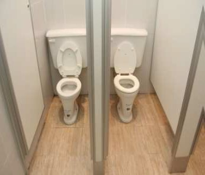
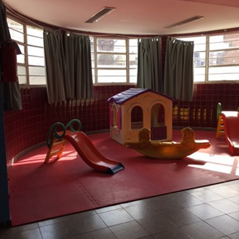
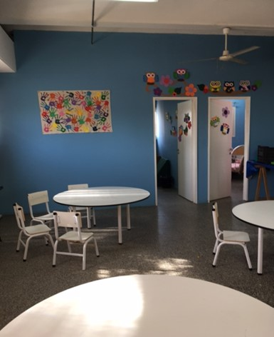
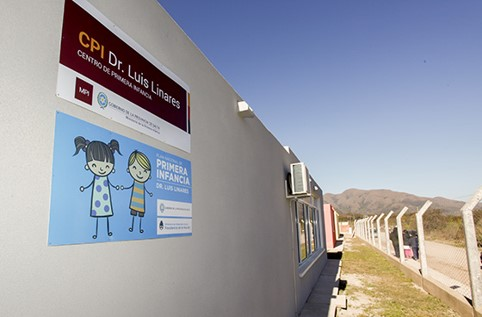
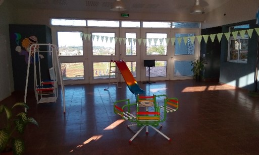
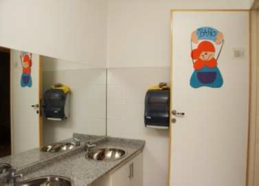
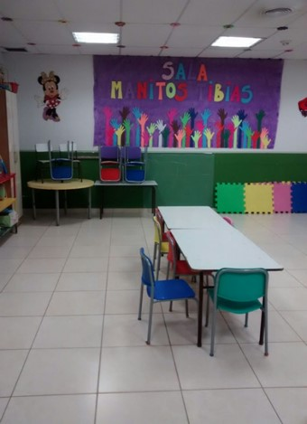
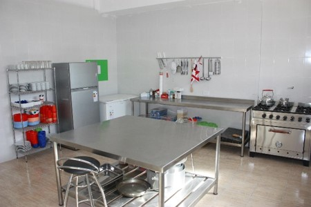
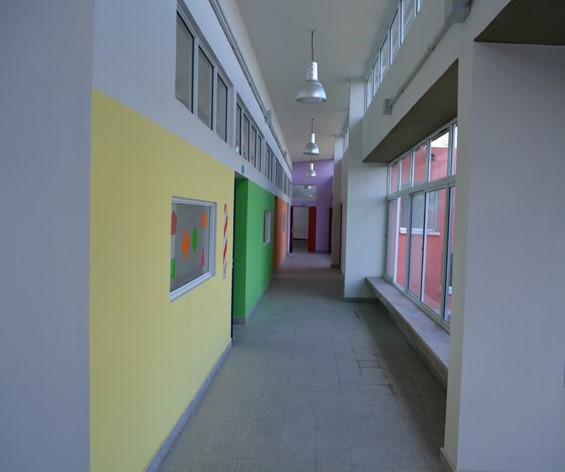
EQUIPAMIENTO
Espacios significativos, seguros, contenedores, estimulantes que favorezcan el desplazamiento autónomo de los niños y niñas y el máximo despliegue de sus habilidades.
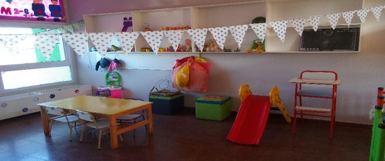
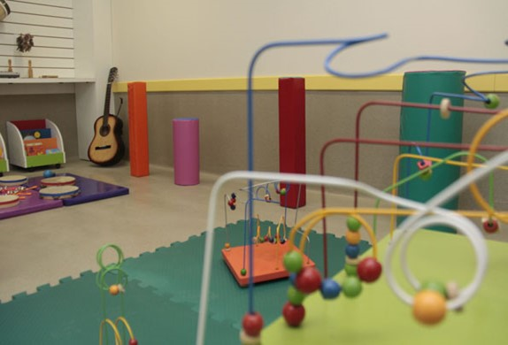
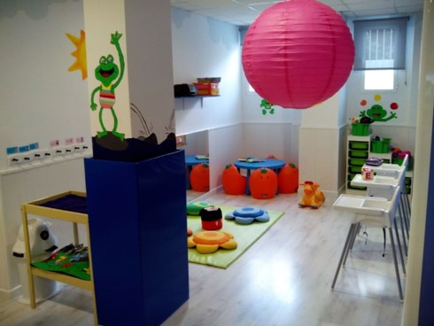
SEGURIDAD E HIGIENE
Dispositivos de seguridad que cumplan con la normativa local vigente
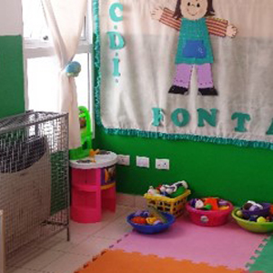
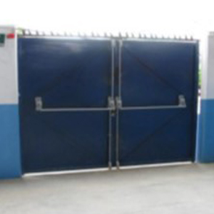
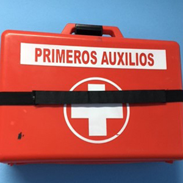
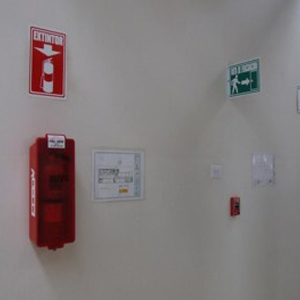
ZONA DE SEGURIDAD INFANTIL:
Es aquel espacio comprendido entre el suelo y 1,20 m de altura de toda la instalación y los accesos (incluyendo la zona de tránsito)
SUELOS:
ligeramente blandos, en función de las necesidades que requieran las actividades que se realizan en cada espacio se aumentará el nivel de amortiguación de los mismos.
PUERTAS Y VENTANAS:
Protegidas evitando lesiones por atrapamiento de extremidades o por golpes contra vidrios, heridas y cortes.
¿CÓMO FUNCIONA UN ESPACIO DE PRIMERA INFANCIA (EPI)?
Modalidad de gestión de los Espacios de Primera Infancia:
- Gestión Gobierno Provincial
- Gestión Gobierno Municipal
- Gestión Gobierno Provincial / Gobierno Municipal
- Gestión de Organizaciones de la Sociedad Civil en conjunto con Gobierno Provincial/Municipal
- Gestión de Organizaciones de la Sociedad Civil
Días y Horarios
Lunes a viernes en media jornada (turno mañana y/o turno tarde) o jornada completa conforme las necesidades de la comunidad donde se emplace el Centro, siendo todos los servicios brindados totalmente gratuitos.
Organización de las salas
Conforme a las edades de los niños/as asistentes, pudiendo haber Salas integradas o multiedad.
Personal
Director/a o Coordinadora, Personal de Sala, Personal de Cocina, Limpieza y Mantenimiento y Equipo Técnico (Trabajador/a Social, Estimulador/a Temprano o Psicomotricista / Psicopedagogo o Psicólogo, otros).
*La conformación de los equipos técnicos se acordará teniendo en consideración las características territoriales de emplazamiento de cada espacio.
SERVICIOS QUE BRINDA
ASISTENCIA NUTRICIONAL
Alimentación adecuada conforme a las necesidades de cada edad y los hábitos alimenticios regionales conforme la modalidad de funcionamiento de cada espacio.
ESTIMULACIÓN TEMPRANA Y PSICOMOTRICIDAD
Actividades para la construcción conjunta de herramientas tendientes a incentivas el desarrollo bio-psico-social de los/as niños/as.
PREVENCIÓN Y PROMOCIÓN DE LA SALUD
Talleres y capacitaciones destinadas a niños/as y sus familias a través de un diagnóstico participativo.
CAPACITACIÓN
Talleres y capacitaciones destinadas a las familias y al personal de los espacios de primera infancia en temáticas relacionadas con el proceso de desarrollo y crianza de los/as niños/as.
¿CÓMO SE FINANCIA UN ESPACIO DE PRIMERA INFANCIA?
SUBSIDIO INICIAL
Destinado a cubrir los gastos necesarios para la adecuación edilicia, equipamiento y demás necesidades para la apertura de nuevos espacios o fortalecimiento de los ya existentes (Adecuación edilicia, equipamiento, medidas de seguridad, cartelería del Espacio).
SUBSIDIO MENSUAL
Destinado a cubrir los gastos corrientes de funcionamiento de los Espacios.
SUPERVISIÓN
El Ministerio de Desarrollo Social de la Nación a través de la Subsecretaría de Primera Infancia realizará el acompañamiento y el monitoreo de cada espacio, conforme los lineamientos y objetivos del presente protocolo.
Sin perjuicio de lo anterior, cada organismo gubernamental provincial y/o municipal deberá contar con un equipo local que tendrá a cargo la supervisión y monitoreo de cada Espacio de Primera Infancia, quien además remitirá informes cuatrimestrales a la mencionada Subsecretaría, certificando el correcto funcionamiento de los mismos y adjuntando las planillas mensuales de asistencia.